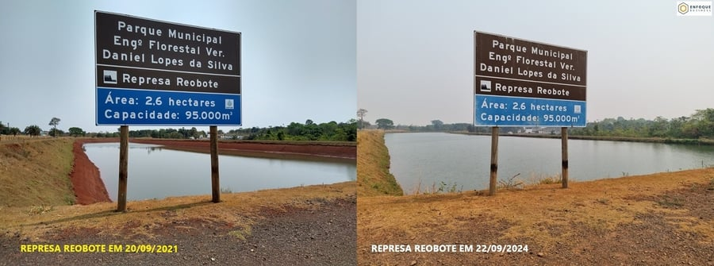

Cultivando Água Boa Tangará
“Predict the future by creating it.” Restoring the springs of the Queima Pé and Ararão rivers to secure Tangará da Serra’s water supply.
The project
Carried out by IPAC, the project’s main goal is to restore the springs and protected areas of the Queima Pé and Ararão rivers, which are essential to the city of Tangará da Serra.
Tangará da Serra has faced critical water supply situations in recent years, and restoring and conserving the Queima Pé is the first step toward a water-secure future. The Queima Pé River is the population’s main water source, while the Ararão River receives treated effluent and may become an alternative supply source in the future.
Results already visible
In 2021, IPAC restored the headwaters of the Queima Pé River. Since then, the headwaters have not run dry — a successful experience that shows the effectiveness of the strategies adopted and the importance of investing in water resource restoration.

How the work is done
At the springs of tributaries of the Queima Pé and Ararão rivers, the work includes clearing the spring outlet, building contour lines to prevent runoff, reforesting a 50-meter radius around the spring and installing groundwater recharge enhancers.
The project has two phases: Phase 1 – Building the collective movement “Cultivando Água Boa Tangará”, and Phase 2 – Intervention in the basin.
Lines of action
Environmental education
Training a group of educators, producing information materials and running on-site education activities.
Restoring protected areas
Restoring and protecting riparian forests along rivers and springs; desilting springs and making them perennial.
Soil conservation
A proposed municipal law on soil use and management, and designs for contour lines and small retention basins.
Rural roads
Technical designs to adapt rural roads in line with soil conservation, and training of local teams.
Groundwater recharge
Sizing and installing mechanisms to enhance groundwater recharge.
Communication
Website, social media, communication strategies and a program launch event.
Why support it
Cultivando Água Boa Tangará shows how NGOs, government and civil society working together can deliver positive results for the environment and the community.
Support this project